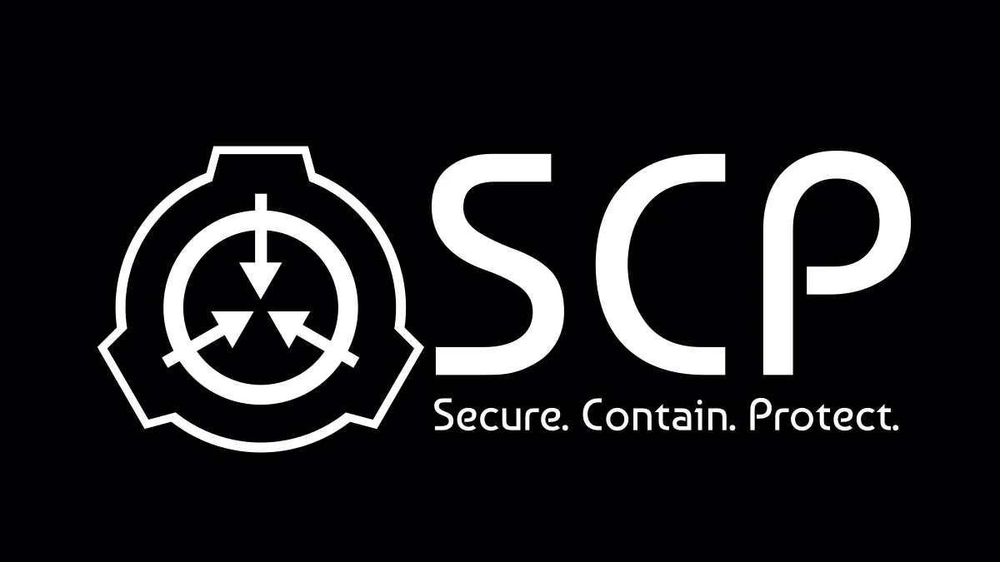

Corporação SCP
- Missão e Propósito: A Corporação SCP é uma organização secreta dedicada a proteger a humanidade de anomalias e fenômenos paranormais, buscando compreendê-los e contê-los para evitar ameaças à segurança global.
- Estrutura Organizacional: A Corporação SCP opera uma rede global de instalações secretas conhecidas como "Sítios", onde anomalias são contidas e estudadas por equipes de agentes especializados.
- Agentes e Recrutamento: Os agentes da Corporação SCP são recrutados de diversas áreas de especialização, incluindo ciência, segurança, combate e investigação paranormal, e trabalham em equipes para localizar, capturar e conter anomalias.
- Sigilo e Segurança: A Corporação SCP mantém um alto nível de sigilo para evitar que o conhecimento sobre as anomalias caia em mãos erradas, utilizando medidas rigorosas de segurança para proteger suas instalações e informações.
- Divulgação Pública: Embora a Corporação SCP opere em segredo, alguns relatos sobre suas atividades vazam para o público por meio de documentos liberados intencionalmente ou vazamentos de informação, alimentando a curiosidade e o mistério em torno de suas operações.
- Origens Ocultas: A Corporação SCP tem uma história misteriosa, suas origens datam de eventos antigos, possivelmente relacionados a sociedades secretas ou crises paranormais. Poucos registros estão disponíveis, aumentando o mistério em torno de sua formação.
O que é a corporação SCP?
Na realidade alternativa em que a Corporação SCP existe, ela é uma organização altamente secreta e especializada em lidar com anomalias e fenômenos paranormais. Sua missão principal é proteger a humanidade dos perigos representados por essas anomalias, enquanto também busca compreendê-las melhor por meio de pesquisa e experimentação.
Desvendando o Mistério: Explorando a Corporação SCP
A Corporação SCP: Guardiã do Inominável
No submundo do conhecimento humano, existe uma entidade clandestina que se esconde nas sombras, mantendo-se vigilante contra as forças além da compreensão humana. Esta é a Corporação SCP, uma organização secreta dedicada à contenção e estudo de anomalias inexplicáveis que desafiam a lógica e ameaçam a segurança da humanidade. Operando em instalações secretas espalhadas pelo globo, a Corporação SCP emprega uma equipe altamente treinada de pesquisadores, cientistas e agentes de campo para identificar, capturar e conter os SCPs (Special Containment Procedures, ou Procedimentos Especiais de Contenção), como são chamadas as anomalias. Estas podem variar desde objetos inanimados com propriedades impossíveis até entidades vivas com habilidades além da compreensão humana.
Objetivo Principal
O objetivo primordial da Corporação SCP é manter o mundo seguro, impedindo que o público em geral entre em contato com essas entidades incompreensíveis. Cada SCP é cuidadosamente classificado de acordo com sua periculosidade e nível de contenção necessário, sendo monitorado e estudado meticulosamente para entender suas origens e capacidades. No entanto, as operações da Corporação SCP são envoltas em sigilo absoluto. O público em geral permanece alheio à existência dessas anomalias e à organização dedicada a contê-las. Vazamentos de informações são tratados com extrema urgência, pois revelar a verdade por trás dos SCPs poderia causar pânico e caos em escala global.
A Missão da Corporação SCP: Desvendando os Mistérios do Desconhecido
Com uma rede global de instalações secretas, equipadas com os mais avançados meios de contenção e pesquisa, a Corporação SCP dedica-se a identificar, classificar e controlar os SCPs, essas entidades além da compreensão humana. Cada SCP é uma janela para o desconhecido, uma peça de um quebra-cabeça cósmico que desafia as fronteiras do nosso entendimento. Os pesquisadores da Corporação SCP trabalham incansavelmente para decifrar os segredos de cada anomalia, buscando compreender sua origem, natureza e propósito. No entanto, o conhecimento é apenas metade da batalha; a contenção adequada é essencial para proteger a humanidade dos perigos que essas entidades representam.
- Divisão de Pesquisa e Desenvolvimento (DPR): Responsável por estudar e compreender as anomalias SCP, buscando avanços científicos e métodos de contenção mais eficazes.
- Divisão de Contenção e Segurança (DCS): Encarregada de garantir que as anomalias permaneçam sob controle, construindo instalações seguras e desenvolvendo protocolos de segurança.
- Divisão de Inteligência e Logística (DIL): Coleta informações vitais e coordena operações em todo o mundo, mantendo a Corporação SCP um passo à frente de seus inimigos.
- Divisão de Aplicação e Resposta Tática (DART): Equipes de resposta rápida especializadas em neutralizar ameaças SCP e minimizar danos em situações de crise.
- Divisão de Comunicações e Informações (DCI): Gerencia a troca de informações dentro da Corporação SCP, garantindo uma comunicação eficiente entre as diferentes divisões e filiais da organização.
- Divisão de Recuperação e Exploração (DRE): Encarregada de recuperar SCPs recém-descobertos e explorar áreas desconhecidas em busca de novas anomalias, trabalhando em conjunto com a DPR para análise e contenção.
- Divisão de Assuntos Éticos e Legais (DAEL): Avalia os aspectos éticos e legais das operações da Corporação SCP, assegurando que todas as atividades estejam em conformidade com os padrões éticos e jurídicos internacionais.
Divisões na SCP
Dentro dos corredores sombrios e salas trancadas da Corporação SCP, uma complexa teia de divisões se estende, cada uma com sua própria especialidade e propósito único. Estas divisões formam os pilares fundamentais da operação da Corporação, garantindo que ela seja capaz de enfrentar os desafios mais obscuros e imprevisíveis que o desconhecido tem a oferecer.
Divisões
Estas são algumas da das divisões presentes na corporação.

Informações SCP
| Categoria | SCP-1001 | SCP-2002 | SCP-3003 | SCP-4004 |
|---|---|---|---|---|
| Nome | Aparição Espectral | Serpente Metálica | A Entidade Viva | O Guardião |
| Perigo | Moderado | Alto | Extremo | Baixo |
| Força | Moderada | Elevada | Incalculável | Limitada |
| Velocidade | Média | Rápida | Incompreensível | Lenta |
| Idade | Centenas de anos | Desconhecida | Milênios | Recém-descoberto |